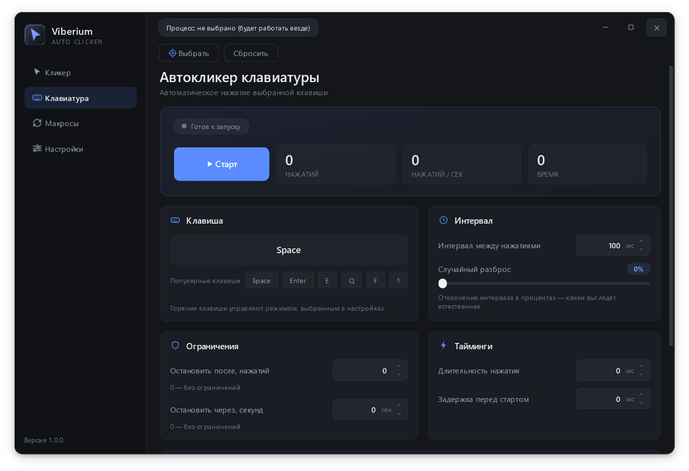
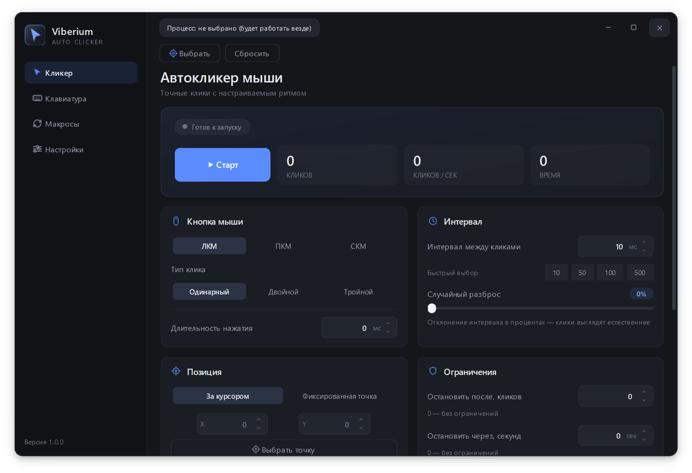
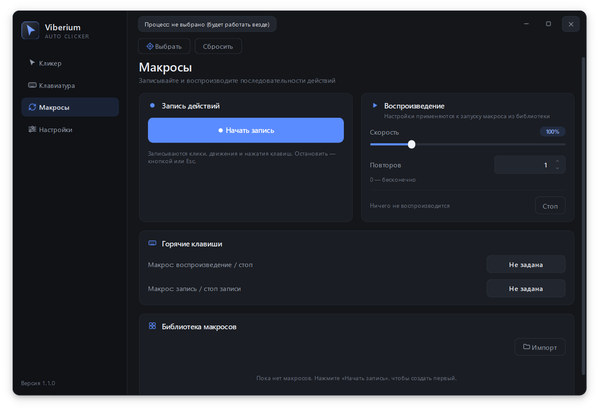
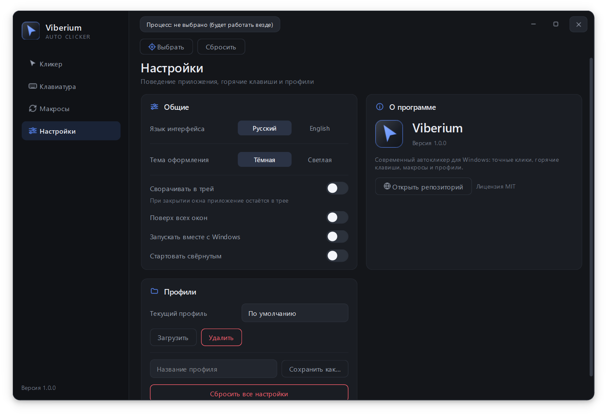

Автокликер для Windows, который не мешает
Клики мышью, нажатия клавиш и сочетания, запись макросов, глобальные горячие клавиши и работа только в выбранном окне. Две темы, русский и английский интерфейс.

Возможности
Всё для рутинных действий
Один инструмент вместо пяти утилит: кликер, клавиатура, макросы и горячие клавиши.
Кликер мыши
ЛКМ, ПКМ, СКМ, одинарный, двойной и тройной клик. Интервал, разброс, зажатие и лимиты.
Клавиатура и сочетания
Несколько кнопок сразу, комбинации с Ctrl, Shift, Alt и Win. Режимы «одновременно» и «по очереди».
Макросы
Запись кликов, движения мыши и клавиш. Своя скорость, повторы, импорт и экспорт JSON.
Горячие клавиши
Старт, стоп, удержание и аварийный стоп F8. Работают даже когда окно свёрнуто в трей.
Целевое окно
Клики только в выбранной программе. Пока окно не в фокусе — автокликер ждёт.
Две темы
Тёмная и светлая, русский и английский интерфейс. Настройки в профилях.
Интерфейс
Выглядит аккуратно
Никаких перегруженных меню: всё, что нужно, на четырёх экранах.



Установка
Три шага — и готово
Без установщика, без регистрации и без скрытых доплат.
Скачайте архив
Viberium-windows.zip со страницы релизов.
Распакуйте целиком
Viberium.exe и папка _internal должны лежать рядом.
Запустите
Откройте Viberium.exe. Настройки хранятся в %APPDATA%\Viberium.
Вопросы
Частые вопросы
Коротко о том, что спрашивают чаще всего.
Windows пишет, что издатель неизвестен. Это безопасно?
Да. Приложение не подписано платным сертификатом, поэтому SmartScreen предупреждает. Нажмите «Подробнее» → «Выполнить в любом случае». Исходный код открыт на GitHub — можно проверить самостоятельно.
Это бесплатно?
Да, полностью. Проект распространяется по лицензии MIT: пользуйтесь, изучайте и меняйте код.
Клики уходят в другие окна. Как это исправить?
Выберите целевой процесс на странице «Кликер» или «Клавиатура». Пока нужное окно не в фокусе, автокликер не работает.
Можно ли настроить сочетания клавиш?
Да. На странице «Клавиатура» добавляйте несколько кнопок и сочетаний с Ctrl, Shift, Alt и Win, меняйте порядок и выбирайте режим нажатия.
Где узнать об обновлениях?
В Telegram-канале @viberium_autoclicker и в разделе Releases на GitHub.